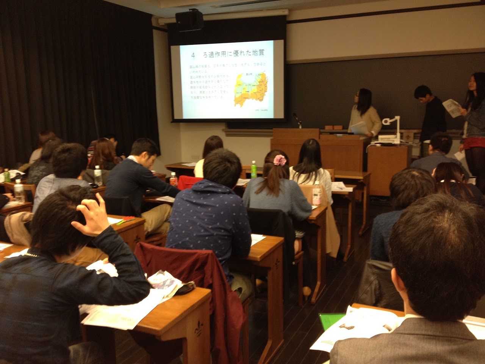
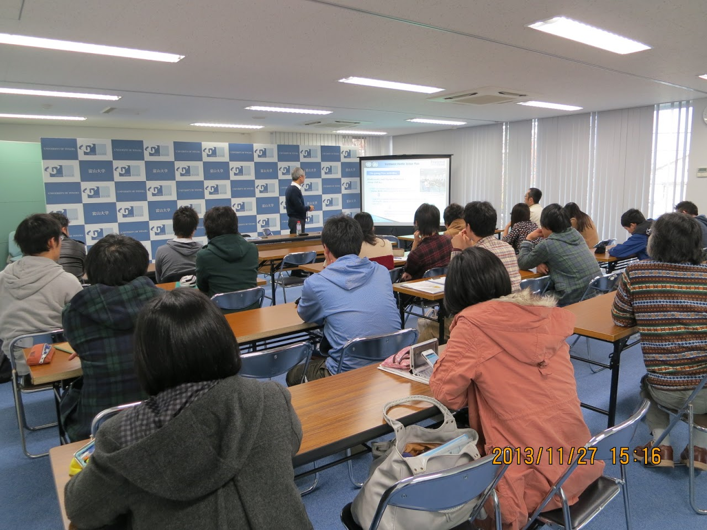

Seminar @ Toyama
Sorry, this page is only in Japanese.
本ゼミのメインテーマは環境問題を経済学的に考えることです。本ゼミでは、自分が勉強していることを簡潔に説明できること、単なる知識ではない社会に出ても活かせる骨太のスキルの習得を目指しています。
2020年度
概要 (基礎ゼミ・専門ゼミ)
本年度の基礎ゼミでは、以下の書籍の輪読を行います。
A, V バナジー・E. デュフロ著『貧乏人の経済学: もういちど貧困問題を根っこから考える』、みすず書房、201２年.
参考：デュフロによるTED Lecture (少し古いですが)
専門ゼミでは、後期にインゼミ論文を進めるための準備として、以下の書籍を輪読します。
星野 匡郎・田中 久稔 (2016)『Rによる実証分析 回帰分析から因果分析へ: 回帰分析の「正しい」使い方をRで徹底解説!!』, オーム社.
ゼミにはノートPCを持参してください。
後期はインゼミ準備を中心に２、３年生共同で行います。
2年生には前期と同様に環境時事の報告を最初にお願いします。
メンバー (専門ゼミ)
§ 安藤 涼雅 (経済学科3年)、ゼミ代表
§ 張 秋杰 (経済学科3年)、副代表
§ 栢原 力衛 (経済学科3年)、夏合宿係
§ 藤田 愛貴 (経営学科3年)、インゼミ係
§ 永川 拓馬 (経済学科3年)、インゼミ係
§ 瀬谷 彩夏 (経済学科2年)、インゼミ係
§ 中村 勇之 (経済学科2年)、副代表
§ 日比野 圭吾 (経済学科2年)、インゼミ係
§ 湊屋 愛 (経済学科2年)、ゼミ代表
§ 山田 真己 (経済学科2年)、インゼミ係
§ 蓮保 真依 (経済学科2年)、インゼミ係
§ 鈴木 史奈 (経営学科2年)、夏合宿係
§ 廣田 詩織 (経営学科2年)、夏合宿係
§ 山口 竜弥 (経営学科2年)、副代表
§ 吉越 元哉 (経営学科2年)、夏合宿係
夏合宿
§ 9月頃に基礎ゼミ・専門ゼミ合同で実施予定 --> 今年度は残念ながら中止です。
§ 現在、京都大学の大学院生とのコラボを計画中です。
インゼミ
§ 12月5日に実施予定 (ホストは大阪経済大学。ただしオンライン開催)
§ インゼミグループは以下の通り（○はリーダー）
§ 第１班：安藤○、瀬谷、廣田、中村、山田 「長野県と富山県のゴミ排出量の違い」
§ 第２班：藤田○、張、湊屋、鈴木、山口 「富山県での空き家対策における民泊活用の妥当性」
§ 第３班：栢原○、永川、湊屋、吉越、日比野 「富山県における食品ロス削減政策の効果の有無」
スケジュール（専門ゼミI&III）
[2020/10/06] 第1週： イントロダクション
[2020/10/13] 第2週： 環境経済学の基本理論#1
環境時事 「富山市の空き家の現状について」(担当：湊屋)
[2020/10/20] 第3週：環境経済学の基本理論#2
環境時事 「日本のごみ問題の現状」(担当：蓮保)
[2020/10/27] 第4週： インゼミ準備#1
環境時事 「クマの異常発生」(担当：瀬谷)
[2020/11/6] 第5週： インゼミ中間報告#1
環境時事 「瀬戸内海がきれいになりすぎている？」(担当：中村)
[2020/11/10] 第6週： インゼミ準備#2
[2020/11/17] 第7週： インゼミ準備#3
環境時事 「ホッキョクグマの危機」(担当：日比野)
2020/12/01] 第8週： インゼミ準備#4
[2020/12/05] 第9週： インゼミ準備 #5 (am)
[2020/12/05] 第10週： インゼミ本番 (pm)
[2020/12/15] 第11週： 環境経済学の基本理論#3
環境時事 「水素エネルギーの可能性」(担当：山田)
[2020/12/22] 第12週：環境政策の現場#1
環境時事 「脱ガソリン社会に向けて」(担当：鈴木)
[2021/01/12] 第13週： 環境政策の現場#2
環境時事 「服と環境問題」(担当：廣田)
[2021/01/19] 第14週： 環境政策の現場#3
環境時事 「海ゴミ」(担当：山口)
[2021/01/26] 第15週： 卒論テーマ報告会
環境時事 「遺伝子組換え食品の生態系への影響」(担当：吉越)
スケジュール（専門ゼミII）
[2020/04/28] 第1週： イントロダクション (Rとは何か？ Rのインストール）
[2020/05/05] 第2週： インゼミ準備 (1)
[2020/05/12] 第3週：「第２章 統計の基礎知識」 担当：藤田
[2020/05/19] 第4週： 「第３章 確率論の基礎」(1) 担当：藤田
[2020/05/26] 第5週： 「第３章 確率論の基礎」(2) 担当：栢原
[2020/06/02] 第6週： 「第4章 回帰分析の基礎」(1) 担当：安藤
[2020/06/09] 第7週： 「第4章 回帰分析の基礎」(2) 担当：張
[2020/06/16] 第8週： インゼミ準備 (2)
[2020/06/23] 第9週： Rで可視化してみよう
[2020/06/30] 第10週： 「第５章 推測統計の基礎」(1) 担当：永川
[2020/07/07] 第11週： 「第５章 推測統計の基礎」(2) 担当：藤田
[2020/07/14] 第12週：「第６章 因果関係と相関関係」 担当：栢原
[2020/07/21] 第13週： 「差の差の推定」について （別途テキストを用意）
[2020/07/28] 第14週： インゼミ準備 (3)
[2020/08/04] 第15週： インゼミ準備 (4)及びテーマ・仮説のプレゼン（@201教室）
スケジュール（基礎ゼミ）
メンバー (基礎ゼミ)
§ 湊屋 愛 (経済学科2年)、ゼミ代表
§ 中村 勇之 (経済学科2年)、副代表
§ 山口 竜弥 (経営学科2年)、副代表
§ 北山 美咲 (経済学科2年)、夏合宿係
§ 鈴木 史奈 (経営学科2年)、夏合宿係
§ 廣田 詩織 (経営学科2年)、夏合宿係
§ 吉越 元哉 (経営学科2年)、夏合宿係
§ 瀬谷 彩夏 (経済学科2年)、インゼミ係
§ 蓮保 真依 (経済学科2年)、インゼミ係
[2020/04/28] 第1週： イントロダクション
[2020/05/05] 第2週：インゼミの準備 (1)
[2020/05/12] 第3週： 輪読「第1章 もういちど考え直そう、もういちど 」(担当：北山)
環境時事「拡大する海洋汚染について」（担当：鈴木）
[2020/05/19] 第4週： 輪読「第2章 １０億人が餓えている？ 」(担当：瀬谷)
環境時事「ステイホームのおかげで空気がきれいに」（担当：廣田）
[2020/05/26] 第5週： 輪読「第3章 お手軽に（世界の）健康を増進？ 」（担当：中村）
環境時事「千里浜の浸食」（担当：山口）
[2020/06/02] 第6週： 輪読「第4章 クラスで一番」（担当：湊屋）
環境時事「COVID-19のメリット・デメリット」（担当：吉越）
[2020/06/09] 第7週： 輪読「第5章 スダルノさんの大家族」（担当：蓮保）
環境時事「食品ロスの現状」（担当：北山）
[2020/06/16] 第8週： インゼミ準備 (2)
[2020/06/23] 第9週： 輪読「第6章 はだしのファンドマネジャー」(担当: 鈴木)
環境時事「紙は木からできている」（担当：瀬谷）
[2020/06/30] 第10週： 輪読「第7章 カブールから来た男とインドの宦官たち」(担当: 廣田）
環境時事「森林火災が与える影響」（担当：中村）
[2020/07/07] 第11週： 輪読「第8章 レンガ一つずつ貯蓄 」(担当：山口）
環境時事「傘」（担当：湊屋）
[2020/07/14] 第12週： 輪読「第9章 企業家たちは気乗り薄 」(担当：吉越）
環境時事「レジ袋有料化」（担当：蓮保）
[2020/07/21] 第13週： 輪読「第10章 政策と政治 」(担当：中村・瀬谷・鈴木）
環境時事「プラごみ」（担当：湊屋）
[2020/07/28] 第14週： インゼミの準備 (3)
[2020/08/04] 第15週： インゼミの準備 (4)及びテーマ・仮説のプレゼン（@201教室）
2019年度
概要 (基礎ゼミ・専門ゼミ)
2019年度から基礎ゼミ生を募集しました。山本ゼミでは主として環境や資源の問題を経済学を使って分析することをまなびますが、基礎ゼミではその準備として、経済学の方法論に関する輪読を中心に行います。2019年度は以下の書籍を輪読します。
伊神満『「イノベーターのジレンマ」の経済学的解明』、日経BP社、2018年.
§ この本では環境問題は一切出てきませんが、経済学を使って問題を分析するにあたって参考になる知識がわかりやすくまとめられています。You Tubeなどに著者の講演などがありますので参考にしてください。
§ 基礎ゼミ、専門ゼミともにゼミの最初に担当者１名による５分間の時事問題あるいは関心のある環境問題に関するプレゼンをしてもらいます（本ページの過去のゼミ記録を参考にしてください）。
2019年度の専門ゼミでは以下のテキストを輪読します。
西山・新谷・川口・奥井（2019)『計量経済学』、有斐閣.
メンバー (基礎ゼミ-->専門ゼミ)
§ 安藤 涼雅 (経済学科2年)、ゼミ代表
§ 藤田 愛貴 (経営学科2年)、副代表
§ 栢原 力衛 (経済学科2年)、インゼミ係
§ 張 秋杰 (経済学科2年)、夏合宿係
夏合宿
§ 9月25-26日に実施
§ 早稲田大学の真田康弘先生をご訪問させていただき、商業捕鯨再開の問題についてご講義・ディスカッションをさせていただきました。
インゼミ
§ 12月14日に立教大学にて開催（詳細はこちら）
§ 「商業捕鯨が再開されたことによる経済効果」を報告しました
スケジュール (専門ゼミ)
[2019/10/03] 第１週： イントロダクション
[2019/10/10] 第２週： 西山ほか4章1-6 、担当(栢原)
[2019/10/17] 第３週： 西山ほか4章6-9、5章1 、担当(安藤)
[2019/10/24] 第４週：西山ほか5章2-5、時事担当(張)
[2019/10/31] 第５週：海外出張のため休講（夏合宿で代替）
[2019/11/07] 第６週：西山ほか5章6-10、時事担当(藤田)
[2019/11/14] 第７週： インゼミの準備 (1)
[2019/11/21] 第８週： インゼミの準備 (2) ---> 海外出張のため休講
[2019/11/28] 第３ターム補講・試験期間（専門ゼミ無し --> 部分的に実施）
[2019/12/03] 第８週分の補講実施
[2019/12/05] 第９週： インゼミの準備 (3): プレゼン練習
[2019/12/12] 第１０週：インゼミの準備 (4): プレゼン練習
[2019/12/12] インゼミ＠立教大学
[2019/12/19] 第１１週： インゼミの振り返り
出張のため休講 -->インゼミにて代替
[2019/12/20] 地方創生環境学に参加 (中国の環境問題)
[2020/01/09] 第１２週：卒論に向けた実証分析スキルの学習(1)、時事担当(張)
[2020/01/16] 第１３週： 卒論に向けた実証分析スキルの学習(2)、時事担当(安藤)
[2020/01/23] 第１４週：卒論に向けた実証分析スキルの学習(3)、時事担当(藤田)
[2020/01/30] 第１５週： 卒論に向けた実証分析スキルの学習(4)、時事担当 (栢原)
スケジュール (基礎ゼミ)
[2019/04/11] 第１週： イントロダクション
[2019/04/18] 第２週： 輪読「第1章 創造的破壊と「イノベーターのジレンマ」 」 (安藤)、時事担当(藤田) 「新紙幣について」
[2019/04/25] 第３週： 輪読「第2章 共喰い 」 (藤田)、時事担当(栢原)「富山駅南北通路の開通について」
[2019/05/09] 富山大学月曜日の授業（基礎ゼミ無し）
[2019/05/16] 第４週： 輪読「第3章 抜け駆け 」 (栢原)、時事担当(張)「米中貿易戦争について」
[2019/05/23] 第５週：インゼミの準備 (1)
[2019/05/30] 第６週： 輪読「第4章 能力格差」 (張)、時事担当(安藤)「違法薬物について」
[2019/06/06] 第７週： インゼミの準備 (2)
[2019/06/13] 第８週： 輪読「第5章 実証分析の3作法」 (安藤)、時事担当(藤田)「日本人の晩婚化について」
[2019/06/20] 第９週： 輪読「第6章 「ジレンマ」の解明(1)需要 (藤田) 、時事担当(栢原)「コパアメリカと日本サッカーの未来」
[2019/06/27] 第１０週：インゼミの準備 (3)
[2019/07/04] 第１１週： 輪読「第7章 「ジレンマ」の解明(2)供給」(栢原)、時事担当(張)「上海の新しい家庭ゴミ分別について」
[2019/07/11] 第１２週：輪読「第8章 動学的感性を養おう 」 (張)、時事担当(安藤)「7年待った」
[2019/07/18] 第１３週： 輪読「第9章 「ジレンマ」の解明(3)投資と反実仮想シミュレーション 」(安藤)、時事担当(藤田)「参議院選挙」
[2019/07/25] 第１４週：輪読「第10章 ジレンマの「解決」(上) 」(藤田) 、輪読「第11章 ジレンマの「解決」(下)」(栢原)
[2019/08/01] 第１５週： インゼミの準備 (4)、時事担当(栢原)「女性就業者3000万人突破」
2018年度
2018年度のゼミは休会となりました。
2017年度
概要
§ 今年度は４年生＋大学院生での運営となります。
§ 個別に卒論指導を進めていきます。
メンバー
§ 村井 真美 (経済学科4年)、ゼミ代表、合宿係 (卒論タイトル：データ分析によってわかる介護の需要の供給のミスマッチ)
§ 辻川 真由 (経済学科4年)、副代表、インゼミ係 (卒論タイトル: 国際河川での水資源配分：チグリス・ユーフラテス川について)
夏合宿
§ 9月に実施予定。 中止。
後期の活動
#1[2017/10/03] 卒論演習 (1)
#2[2017/10/10] 出張のため休講
#3[2017/10/17] 卒論演習 (2)
#4[2017/10/24] 卒論演習 (3)
#5[2017/10/31] 卒論演習 (4)
#6[2017/11/07] 卒論演習 (5)
#7[2017/11/14] 環境塾に参加 (11/15 pm)
#8[2017/11/21] 卒論演習 (6)
#9[2017/11/28] 総合科目「日本海学：日本の環境政策」に参加
#10[2017/12/05] 富山統計セミナーに参加
#11[2017/12/12] 卒論演習 (7)
[2017/12/16] インゼミ＠立教大学
#12[2017/12/19] 卒論演習 (8)
[2018/01/08] 富山大学月曜日の授業
#13[2018/01/16] 卒論演習 (9)
#14[2018/01/23] 卒論演習 (10)
#15[2018/01/30] 卒業論文最終報告会
前期の活動
#1[2016/04/11] イントロダクション・卒論テーマ報告
#2[2016/04/18] 卒論演習 (1)
#3[2016/04/25] 卒論演習 (2)
#4[2016/05/09] 卒論演習 (3)
#5[2016/05/16] 卒論演習 (4)
#6[2016/05/23] 卒論演習 (5)
#7[2016/05/30] 卒論中間報告 (1)
#8[2016/06/06] 卒論演習 (6)
#9[2016/06/13] 卒論演習 (7)
#10[2016/06/20] 卒論演習 (8)
#11[2016/06/27] 海外からのGuest Speakerによる講演 (1)
#12[2016/07/04] 卒論演習 (9)
#13[2016/07/11] 海外からのGuest Speakerによる講演 (2)
#14[2016/07/18] 卒論演習 (10)
#15[2016/07/25] 卒論中間報告 (2)
§
インゼミ
§ 11月26日(土)に、青山学院大学、中央大学、立教大学とともに、富山大学経済学部にて開催しました。
§ 「域内CO2排出量を最小化する高速道路料金の検討」について報告しました。(ポスターはこちら）
2016年度
概要
§ 今年度は8名のメンバー＋大学院生での運営となります。
§ 2016年春学期は、環境経済学の理論を中心に学びます。以下の４つのテキストから章を選んで、３年生が報告する形式です。
§ 浅子和美・落合勝昭・落合由紀子 (2015)『グラフィック環境経済学』、新世社『第３章 環境問題はどこから起こる？」「第４章 環境問題にどう対処する？」「第５章 環境を評価する」
§ 細田衛士編(2012)『環境経済学』、ミネルヴァ書房「第６章 環境税」(山本雅資)
§ 馬奈木俊介編著(2014)『エネルギー経済学』、中央経済社「第８章 排出権取引」(新熊隆嘉)
§ コンラッド (2002)『資源経済学』、岩波書店(岡・中田訳) 「第４章 林業の経済学」
§ ３年生の報告頻度が高いため、今年度の前期はサブゼミは行いません。その代わりに４年生、３年生合同のR言語学習を行います。
§ 後期は、数学班と英語班に分かれて、文献輪読を行います。
メンバー
§ 高田 慶 (経済学科 4年)、ゼミ代表 (卒論タイトル: 東南アジアCSR報告書からみる各国の環境への意識の違い)
§ 綿屋 芳洋 (経済学科 4年)、副代表 (卒論タイトル: 富山県の人口移動の要因分析)
§ 島 健人 (経営学科 4年)、インゼミ係 (卒論タイトル: たばこの適正価格をもとにしたIQOSの適正価格の算出)
§ 萩中 一樹 (経済学科 4年)、インゼミ係, スポーツ大会係 (卒論タイトル: 耕作放棄地発生の要因分析)
§ 小杉 慶 (経営学科4年)、合宿係 (卒論タイトル: プロサッカーリーグにおける戦力均衡について)
§ 佐藤 葉月 (経済学科4年)、合宿係 (卒論タイトル: 日本における再エネ政策の経済分析)
§ 村井 真美 (経済学科3年)、ゼミ代表、合宿係
§ 辻川 真由 (経済学科3年)、副代表、インゼミ係
サブゼミグループ
§ (1)地図班；小杉・佐藤・村井 (古谷知之 (2011)『Rによる空間データの分析』、第4章 ) ----> 成果1
§ (2)グラフ班：島・萩中・辻川 (矢内勇生(2015)「政治学方法論 I：Rを使って表と図を作る」) ----> 成果2
§ (3)統計班：高田・綿屋 (飯田健 (2011) 『Rで学データサイエンス(14)：計量政治分析』、第6章) ----- > 成果3
後期課題グループ
§ (1) 数学班：綿屋・佐藤・萩中・辻川 「生き物の行動とゲーム理論」--->成果1
§ 巌佐庸 (2002) 「第２章 生物進化とゲーム理論」（今井・岡田編著『ゲーム理論の新展開』、勁草書房に所収）.
§ (2) 英語班：高田・小杉・島・村井 「EUにおける排出権取引が明らかにしたこと」--->成果2
§ Ellerman, A.D., Marcantonini, C. and A. Zaklan (2016) ``The European Union Emissions Trading System: Ten Years and Counting,'' Review of Environmental Economics and Policy, vol. 10 (1), 89-107, doi:10.1093/reep/rev014
とやま未来創生政策アイデアコンテスト
§ RESASの普及を目的とした政策アイディアコンテストに参加しました。
§ 2017年2月12日の最終選考会で、３年生が優秀賞を獲得しました(詳細はこちら)。
夏合宿
§ 9月5-6日の日程で行いました。5日は新日鉄住金(株)のご厚意で名古屋製鉄所を見学させていただきました。
環境関連企業見学
§ ハリタ金属株式会社射水リサイクルセンターの見学会を行いました(6/15)。
後期の活動
#1[2016/10/04] 浅子・落合・落合(2015) 「第5章 環境を評価する」 by 辻川
#2[2016/10/11] 出張のため休講（夏合宿で代替)
#3[2016/10/18] コンラッド(2002)「第4章 林業の経済学」 by 村井
#4[2016/10/25] 卒論中間報告#1 (佐藤、綿屋、高田）
#5[2016/11/01] 卒論中間報告#2 (萩中、島、小杉)
#6[2016/11/08] インゼミ論文中間報告#1
#7[2016/11/15] インゼミ論文中間報告#2
#8[2016/11/22] 総合科目「日本海学：日本の環境政策」に参加
[2016/11/26] インゼミ＠富山大学
#9[2016/11/29] インゼミ総括+後期プレゼン作業(1) 編入試験のため休講 (インゼミで代替)
#10[2016/12/06] 後期プレゼン作業(2) (1)
#11[2016/12/13] 後期プレゼン作業(3) シンポジウム「北東アジアの環境問題」に参加
#12[2016/12/20] 後期プレゼン作業(4) 小型家電リサイクルに関する講演会
[2017/01/10] 富山大学月曜日の授業
#13[2017/01/17] 卒論中間報告#3 後期プレゼン作業 (2)
#14[2017/01/24] 後期輪読成果のプレゼン (成果1, 成果2)
#15[2017/01/31]
卒業論文最終報告会 (2017/02/8に実施）
前期の活動
#1[2016/04/12] イントロダクション・卒論テーマ報告
#2[2016/04/19] 浅子・落合・落合(2015) 第3章 環境問題はどこから起こる？ (1) by 辻川 / 時事ネタ by 萩中 「捨てた食品が食卓に～大量廃棄の裏で～」
#3[2016/04/26] 浅子・落合・落合(2015) 第3章 環境問題はどこから起こる？ (2) by 辻川 / 時事ネタ by 佐藤 「仕事がない世界”がやってくる!?」
#4[2016/05/10] 浅子・落合・落合(2015) 第4章 環境問題にどう対処する？ (1) by 村井 / 時事ネタ by 小杉「そして“奇跡”は起きた～岡崎レスター 世紀の番狂わせ～」
[2016/05/11] G7富山環境大臣会合 関連事業 「とやま水素エネルギーシンポジウム ～究極のエコカー普及に向けて～」 参加
[2016/05/15] G7環境大臣会合 開催 (-16日まで）
#5[2016/05/17] 浅子・落合・落合(2015) 第4章 環境問題にどう対処する？ (2) by 村井 / 時事ネタ by 高田「シャープ"買収": 日本のものづくりはどこへ」
[2016/05/23] 2016北東アジア自治体環境専門家会合 inとやま
#6[2016/05/24] 山本(2012) 第6章 環境税 (1) by 辻川 / 時事ネタ by 綿屋 「原爆投下 71年目の訪問 ～オバマの決断 広島の願い～」
#7[2016/05/31] 山本 (2012) 第6章 環境税 (2) by 辻川 / 時事ネタ by 村井「三菱自動車 “燃費不正”の真相」
#8[2016/06/07] 新熊 (2014) 第８章 排出権取引 (1) by 村井 / 時事ネタ by 辻川「膨らむ13億人の“欲望” ～中国ネット金融の光と影～」
#9[2016/06/14] 新熊 (2014) 第８章 排出権取引 (2) by 村井 / 時事ネタby 萩中「“奨学金破産”の衝撃 若者が… 家族が…」
[2016/06/15] 環境関連企業見学 #1 (ハリタ金属株式会社： 参考資料1 (日経新聞), 参考資料2 (環境省資料) )
[2016/06/18] 富山大学MBA講座「EUにおける新たな資源循環戦略と企業活動への影響」
#10[2016/06/21] Rを使った分析演習 (1)
#11[2016/06/28] Rを使った分析演習 (2)
#12[2016/07/05] Rを使った分析演習 (3)
#13[2016/07/12] Rを使った分析演習 (4)
#14[2016/07/19] Rサブゼミ報告
#15[2016/07/26] 報告会 (インゼミ論文及び卒論の先行研究・仮説)
2015年度
概要
§ 今年度は９名のメンバー＋大学院生での運営となります。
§ 2015年春学期は、 環境経済学の理論を中心に進めています。
§ ３年生の使用テキストは、コンラッド (2002) 『資源経済学』、岩波書店 (岡・中田訳)です。
§ ゼミ生主体で運営のサブゼミでは、前期は神取(2014)『ミクロ経済学の力』の学習を行っています。
§ 前期分は無事終了しました(7/15)。正規授業枠外にも関わらず、よく頑張りました。
§ 後期サブゼミはグループに分かれて、R言語の学習を行います。
メンバー
§ 宮 稜治 (経済学科 4年)、ゼミ代表/インゼミ係 (卒論タイトル：電力会社と都市ガス会社の競争による余剰分析の比較)
§ 西島 史祥 (経済学科 4年)、副代表/合宿係 (卒論タイトル：森林環境税導入による効果）
§ 斎藤 はるな (経済学科 4年)、インゼミ係/合宿係 (卒論タイトル：環境面からみる コンパクトシティ富山 ～LRT・市内電車の有効性～)
§ 高田 慶 (経済学科 3年)、ゼミ代表
§ 綿屋 芳洋 (経済学科 3年)、副代表
§ 島 健人 (経営学科 3年)、インゼミ係
§ 萩中 一樹 (経済学科 3年)、インゼミ係, スポーツ大会係
§ 小杉 慶 (経営学科3年)、合宿係
§ 佐藤 葉月 (経済学科3年)、合宿係
後期サブゼミグループ
§ (1)地図班；宮・小杉・佐藤 (古谷知之 (2011)『Rによる空間データの分析』、第２章 ) ----> 成果1
§ (2)グラフ班：西島・島・萩中 (岡田晶史 (2011) 『Rパッケージガイドブック』、ggplot2パッケージ、plyrパッケージ ) ----> 成果2
§ (3)統計班：斎藤・高田・綿屋 (飯田健 (2011) 『Rで学データサイエンス(14)：計量政治分析』、第４章) ----- > 成果3
夏合宿
§ 9月8-10日に豊島・直島(三菱マテリアル)を訪問しました。
§ 豊島では、廃棄物対策豊島住民協議会にて大変興味深いご説明をいただきました。

インゼミ
§ 12月19日(土)に中央大学経済学部にて、立教大学経済学部、中央大学経済学部、成蹊大学経済学部と実施
§ 「北陸の電力使用事情と電力自由化」：高田、佐藤、小杉 (ポスターはこちら)
§ 「東日本大震災における漁業への影響」：綿屋、萩中、島 (ポスターはこちら）
参加10チームの中で「北陸の電力使用事情と電力自由化」が最優秀賞となりました！
環境経済・政策学会シンポジウム参加
§ 2015年12月18日に富山市内で開催された環境経済・政策学会のシンポジウムにてポスター報告を行いました。

ゼミ対抗スポーツ大会
§ 山本ゼミ主催の第２回ナカムラ杯を6月17日に開催しました。
§ 参加ゼミ数も７ゼミ、８チームと前回より規模を拡大して実施しました。
§ 今年は昨年より順位を落としました。来年に期待です。
後期の活動 (2015/10/13更新)
#1[2015/10/06] 出張のため休講 ----> 夏合宿で代替
#2[2015/10/13] コンラッド(2002)第7章 オプション価値とリスクのある開発 (1) by 小杉
#3[2015/10/20] コンラッド(2002)第7章 オプション価値とリスクのある開発 (2) by 小杉 (ConradCH07.xlsx)
#4[2015/10/27] Rを使った演習(1)
[2015/11/03] 文化の日
#5[2015/11/10] インゼミ論文中間報告1
#6[2015/11/17] コンラッド(2002)第8章 持続可能な発展 by 萩中 (ConradCH08.xlsx)
#7[2015/11/24] 特別入試のため休講 ---> インゼミにて代替
#8[2015/12/01] 卒論中間報告1 / インゼミ論文中間報告2
#9[2015/12/08] 総合科目「日本海学：日本の環境政策」に参加
#10[2015/12/15] インゼミ論文中間報告3
[2015/12/18] SEEPSシンポジウム参加予定
[2015/12/19] インゼミ＠中央大学経済学部 ---> 最優秀賞をいただきました！
#11[2015/12/22] 卒論中間報告2
#12[2016/01/05] Rを使った演習(2)
[2016/01/12] 富山大学月曜日の授業
#13[2016/01/19] Rを使った演習(3)
#14[2016/01/26] 卒業論文最終報告会
#15[2016/02/02] Rを使った演習(4)
前期の活動
#1[2015/04/14] イントロダクション
#2[2015/04/21] 卒論テーマ報告・コンラッド(2002)第１章 by 山本 (ConradCH01.xlsx, 4/25に再更新) / 時事ネタ by 小杉 「人間は不要に? “人工知能社会”の行方」
#3[2015/04/28] コンラッド(2002)第2章 数値的配分問題の解法 (1) by 綿屋 (ConradCH02.xlsx) / 時事ネタ by 佐藤 「テロの拡散が止まらない」
#4[2015/05/12] コンラッド(2002)第2章 数値的配分問題の解法 (2) by 綿屋 (ConradCH02E.xlsx) / 時事ネタ by 島 「埋没技術”を活用せよ ～市場創出への挑戦～」
サブゼミ (1) [2015/05/13] 神取(2014) 第3章 「3.1 部分均衡分析」by 島、「3.2 TPPについてこれだけは知っておこう」 by 小杉 (西島）
#5[2015/05/19] コンラッド(2002)第3章 漁業の経済学 (1) by 佐藤 / 時事ネタ by 高田「ふるさと納税 ブームが問うものは」
#6[2015/05/26] コンラッド(2002)第3章 漁業の経済学 (2) by 佐藤 / 時事ネタ by 萩中「食卓の魚高騰! 海の資源をどう守る」
#7[2015/06/02] コンラッド(2002)第3章 漁業の経済学 (3) by 佐藤 (ConradCH03.xlsx) / 時事ネタ by 綿屋「預金が消える ～ネット決済の新たなリスク～」
#8[2015/06/09] コンラッド(2002)第4章 林業の経済学 (1) by 島 (ConradCH04dataset.xlsx) / 時事ネタ by 小杉「ついに発見！？ 地球外生命に挑む科学者たち」
#9[2015/06/16] コンラッド(2002)第4章 林業の経済学 (2) by 島 / 時事ネタ by 佐藤「どう守る 妊娠中の働く女性」
サブゼミ(2) [2015/06/17] 神取(2014) 第4章「4.1 外部性」by 萩中 「4.2 公共財」 by 綿屋 (宮）
#10[2015/06/23] コンラッド(2002)第4章 林業の経済学 (3) by 島 (ConradCH04.xlsx) / 時事ネタ by 島「水族館からイルカが消える!? ～国際批判に揺れる現場～」
#11[2015/06/30] 海外出張のため休講 --->サブゼミで代替 / ４年生卒論進捗報告 (斎藤・西島・宮)
#12[2015/07/07] コンラッド(2002)第5章 非再生資源の経済学 (1) by 高田 / 時事ネタ by 萩中「足元に眠る宝の山～知られざる下水エネルギー～」
#13[2015/07/14] コンラッド(2002)第5章 非再生資源の経済学 (2) by 高田 / 時事ネタ by 高田「“常識破り”の球団改革 ～密着・DeNAベイスターズ～」
サブゼミ(3) [2015/07/15] 神取(2014) 第7章「7.1 & 7.2」by 佐藤、「7.3 & 7.4」 by 高田（斎藤）
#14[2015/07/21] コンラッド(2002)第5章 非再生資源の経済学 (3) by 高田 (ConradCH05.xlsx) / 時事ネタ by 綿屋「なぜ広がる “ブラックバイト”被害」
#15[2015/07/28] 報告会 (インゼミ論文及び卒論の先行研究・仮説) / 時事ネタ by 小杉「あなたは音楽をどう愛す？ ～新・配信ビジネスの衝撃～」
2014年度
概要
§ 本ゼミのメインテーマは環境問題を経済学的に考えることです。
§ 2014年春学期は、 環境経済学の理論を中心に進めています。
§ ３年生の使用テキストは、時政・薮田・今泉・有吉 (2007) 『環境と資源の経済学』、勁草書房、です。
§ ４年生の使用テキストは、古谷 (2011) 『Rによる空間データの分析』、朝倉書店、です。
§ ゼミ生主体で運営のサブゼミでは、尾山・安田(2013)『経済学で出る数学：改訂版』の学習を行っています。
メンバー
§ 江本 美月 (経済学科 4年)、ゼミ代表 (卒論テーマ: 「森林資源の活用を考える」 )
§ 熊谷 萌 (経済学科 4年)、副代表 (卒論テーマ: 「東京オリンピック開催における交通網変化がもたらす 環境への影響」)
§ 大嶋 慧子 (経済学科 4年)、インゼミ係 (卒論テーマ: 「富山県の水産資源の持続性 ー富山のブリ類資源ー」)
§ 大井 翔太 (経済学科 4年)、インゼミ係 (卒論テーマ: 「富山県におけるガソリン蒸気の回収・利用」)
§ 三代澤 遼 (経済学科 4年)、合宿係 (卒論テーマ: 「小水力発電の導入による経済性と今後の展望」)
§ 水谷 由香 (経済学科 4年)、合宿係 (卒論テーマ: 「国内における住宅用太陽光発電普及率に関する分析」)
§ 宮 稜治 (経済学科 3年)、ゼミ代表/インゼミ係
§ 西島 史祥 (経済学科 3年)、副代表/合宿係
§ 斎藤 はるな (経済学科 3年)、インゼミ係/合宿係
§ 韓セイ（交換留学生：上海大学）
夏合宿
§ 9月18,19日に岐阜県高山市にて実施。
§ インゼミ・卒論の中間報告を行いました。
§ 神岡鉱業（株）のご厚意で、廃バッテリーリサイクルの視察をしました。
インゼミ
§ 日時：2014年12月6日（土）
§ 場所：青山学院大学 青山キャンパス
§ 2014年度は、立教大学経済学部・青山学院大学経済学部・中央大学経済学部の環境経済学ゼミと合同で行いました。
ゼミ対抗スポーツ大会
§ 山本ゼミの呼びかけで、経済学部及び理学部の計６ゼミによるフットサル・バスケ大会を開催しました。
§ ナカムラ杯と称して開催した第１回大会の優勝は山田ゼミ、当ゼミは２位タイとなりました。

特別企画「連続セミナー：環境を仕事にする」
§ 「環境」を仕事としている方々の体験談及びそのキャリアパスについて伺います。
§ これは山本ゼミ及び極東地域研究センターによる特別企画です。
[2014/06/18]：WWF ジャパン
講師：草刈 秀紀 (WWF ジャパン)
場所：富山大学理学部多目的ホール
WWF（World Wide Fund for Nature：世界自然保護基金）は約100カ国で活動している環境保全団体です。WWFの活動は、1961年9月、絶滅のおそれのある野生生物を救うこ とからスタートしました。その後、野生生物が生きる上で必要とする、さまざまな自然環境、森や海、草原、湿地などの、さまざまな生態系の保全に活動の範囲 を拡大。地球環境の保全をめざし、現在は温暖化を含めた多様な環境問題への取り組みを行なっています。本講演では、草刈氏のこれまでの経験・キャリア形成 を含め、WWFジャパンの取り組みをお話いただきます。

後期の活動
#1[2014/10/07] イントロダクション、卒論中間報告1（大井・三代澤）、回帰分析の理論(山本)
#2[2014/10/14] Rを使った演習(1)
#3[2014/10/21] Rを使った演習(2)
#4[2014/10/28] インゼミ論文中間報告1
日本海ガス会社見学[2014/10/29]
#5[2014/11/04] 出張につき休講
#6[2014/11/11] 卒論中間報告1(熊谷・江本・大嶋)
#7[2014/11/18] 総合科目「日本海学：日本の環境政策」に参加
[2014/11/25] インゼミ論文中間報告2 --> 特別入試のため休講
#8 [2014/11/27] 合同インゼミリハーサル
#9[2014/12/02] インゼミ論文中間報告3 (教室変更102へ）
[2014/12/06] インゼミ本番＠青山学院大学
#10[2014/12/09] インゼミ結果の再考
#11[2014/12/16] 卒論中間報告2(水谷・大井・三代澤)
#12[2015/01/06] Rを使った演習(3)
[2015/01/13] 富山大学月曜日の授業
#13[2015/01/20] Rを使った演習(4)
#14[2015/01/27] 卒業論文最終報告会
#15[2015/02/03] 海外出張のため休講 --> インゼミで代替
前期の活動
#1[2014/04/15] イントロダクション
#2[2014/04/22] 出張のため休講 --> 2014/06/18に補講
#3[2014/05/02] 富山大学火曜日の授業：古谷 (2011)第2章 by 水谷 / 時事ネタ by 江本 (北陸新幹線開通について)
#4[2014/05/13] 時政他 (2007) 第1章 by 宮 / 時事ネタ by 斎藤 (「DORAEMON」放送開始)
サブゼミ (1) [2014/05/14] 尾山・安田(2013)第１章「１次関数と市場メカニズム」 by 斎藤 (大嶋）
#5[2014/05/20] 古谷 (2011)第3章 (1) by 江本
/ 時事ネタ by 西島
#6[2014/05/27] 古谷 (2011)第3章 (2) by 江本 / 時事ネタ by 宮 (農業の6次産業化について)
#7[2014/06/03] 時政他 (2007) 第2章「環境問題と市場の失敗」(1) by 斎藤 / 時事ネタ by 西島 (トワイライトエクスプレスについて)
#8[2014/06/10] 時政他 (2007) 第2章「環境問題と市場の失敗」 (2) by 斎藤 / 時事ネタ by 斎藤 (ふるさと納税について)
サブゼミ(2) [2014/06/11] 尾山・安田(2013) 第2章「２次関数と独占・寡占市場」(1) by 宮（江本）
#9[2014/06/17] 時政他 (2007) 第3章「環境政策の目標・手段・主体」 by 西島 / 時事ネタ by 宮 (W杯の経済効果について)
[2014/06/18] 「環境を仕事にする」講演会 (WWF 草刈氏) ----> その後、6ゼミ対抗バスケ・フットサル大会へ
#10[2014/06/24] 時政他 (2007) 第4章 「インセンティブと経済的手段」(1) by 宮 / 時事ネタ by 西島(パチンコ課税について)
サブゼミ(3) [2014/06/25] 尾山・安田(2013)第3章「指数・対数と金利」by 西島（熊谷）
#11[2014/07/01] 時政他 (2007) 第4章 「インセンティブと経済的手段」(2) by 宮 / 時事ネタ by 斎藤 (ヤギによるエコ除草 by amazon.co.jp)
#12[2014/07/08] Asian Development Bank Institute での講演のため休講 →サブゼミに振替
サブゼミ(4) [2014/07/08] 尾山・安田(2013) 第2章「２次関数と独占・寡占市場」(2) by 斎藤（大井）
サブゼミ(5) [2014/07/09] 尾山・安田(2013)第5章「1変数の微分と利潤最大化」(1) by 宮（三代澤）
#13[2014/07/15] 時政他 (2007) 第5章 「再生可能資源の経済学」(1) by 斎藤 / 時事ネタ by 宮 (富士山の入山料について)
#14[2014/07/22] 時政他 (2007) 第5章 「再生可能資源の経済学」(2) by 西島 / 時事ネタ by 西島 (無電柱化プロジェクトについて)
#15[2014/07/29] 尾山・安田(2013)第5章「1変数の微分と利潤最大化」(2) by 西島（水谷） / 時事ネタ by 斎藤
今学期も間もなく終了しますが、単位認定のないサブゼミに熱心に取り組んでくれた三年生、それを支えてくれた四年生、ともによく頑張ってくれたと思います(7/9)。
2013年度
概要
§ 本ゼミのメインテーマは環境問題を経済学に考えることですが、具体的な問題を検討する前に、経済理論の学習を進めることにしています。
§ 2013年春学期は、経済数学とゲーム理論の学習を中心に進めています。
§ 具体的には、尾山・安田(2013)『経済学で出る数学』、日本評論社．および、中山・武藤・船木編(2000) 『ゲーム理論で解く』、有斐閣．の輪読を行っています。
§ 春学期は、テキストの報告の前に、興味を持った時事ネタについて、簡単なプレゼンを行っています。
§ 山本ゼミが読売新聞（2013/06/12, 富山版）にて紹介されました。
§ 2013年秋学期は、時政(2011)『環境経済学の視点』、牧野書店．を報告するパートと、地球温暖化に関する環境経済学的研究のレビュー論文(英語：以下のリスト参照)についての報告を行うパートにわけて進めています。
§ Metcalf, G. (2009) ``Market -based Policy Options to Control U.S. Greenhouse Gas Emission,'' Journal of Economic Perspective, vol. 23, pp. 5-27.
§ Tol, R. (2009) `` The Economic Effects of Climate Changes,'' Journal of Economic Perspective, vol. 23, pp. 29-51.
§ Barrett, S. (2009) `` The Coming Global Climate-Technology Revolution, Journal of Economic Perspective, vol. 23, pp. 53-75.
§ また、1月以降は卒論に向けたツール取得として、R言語の学習を行います。
メンバー
§ 江本 美月(経済学科)、ゼミ代表
§ 熊谷 萌 (経済学科)、副代表
§ 大嶋 慧子(経済学科)、インゼミ係
§ 大井 翔太(経済学科)、インゼミ係
§ 三代澤 遼(経済学科)、合宿係
§ 水谷 由香(経済学科)、合宿係
夏合宿
§ 7月14,15日に長野県白馬にて実施
§ インゼミに向けての中間報告を行いました。
インゼミ
2013年11月23日（土）＠立教大学経済学部
§ 2013年度は立教大学経済学部の環境経済学ゼミとインゼミを行います。
§ 報告テーマ1:「富山県における水資源の活用 ～ 富山の水資源がもたらす効果」（江本、大嶋、三代澤）
§ 【概要】 私たちの日々の生活に水資源は欠くことができない資源である。地球は、『青い惑星』 といわれており、約14億km³とされる水によって表面の70％を覆われている。そのうちの97.5％が海水で、淡水は2.5%しかない。しかも、淡水を100%として見た時、淡水の約70%が氷河や氷山が占めており、残りの30%のほとんどは土中の水分や地下深くの帯水層の地下水となっている。そのため、人間が利用しやすい河川や湖沼に存在する地表水というのは、地球上のすべての水のわずか0.01%なのである。現在、人間が必要とする水需要量に対して、地球全体では水資源量は足りている。しかし地域によって偏在しているのが問題である。幸い日本は、島国でまわりが海に囲まれており、水資源の豊かな国といえる。そのなかでも、富山県は水資源が豊富な県であり「水の王国とやま」として知られている。また、この豊富な水資源が富山県の発展に大いに貢献している。本論文では、豊富な水資源が富山県にもたらしている産業・環境・生活の3つの効果について、富山県の水資源が豊かな理由とともに述べていく。
§ 報告テーマ2: 「富山県におけるツキノワグマと堅果類の豊凶との関係」（熊谷、大井、水谷）
§ 【概要】ツキノワグマは、農作物に被害を与えるだけでなく、人に危害を加え死に至らしめることもある動物である。富山県においても、人身被害や死亡事故が発生しており、対策が必要である。 ツキノワグマの出没件数には大きな増減があり、これはツキノワグマによる人的被害の増減にも繋がっている。そのため、まずはツキノワグマの出没に影響を与える要因は何かについての分析を行う。その後、経済学的なアプローチによってツキノワグマによる被害を減少させることは可能かについて考えていく。

特別企画「連続セミナー：環境を仕事にする」
§ 「環境」を仕事としている方々の体験談及びそのキャリアパスについて伺います。
§ これは山本ゼミ及び極東地域研究センターによる特別企画です。
§ 本年度は合計5回を予定しています。第2回以降は秋学期に開催します。
第１回 [2013/07/18]：Clear Water Nippon
講師：David S. Abraham (Clear Water Initiative 代表)、逐次通訳：田島夏与（立教大学経済学部准教授）
場所：富山大学経済学部１０２号室
ClearWater NipponはBen Sklaverが設立した米国のNPOであるClearWater Initiative (CWI) の姉妹法人です。Benは米軍における紛争地域の支援活動を通じて「安全な飲料水」で地域の経済発展、治安の向上や人々のエンパワメントが実現できることを確信し、帰還後に市民活動としてCWIを設立して活動を進めましたが、2009年にアフガニスタンでの自爆テロ攻撃で殺害されました。ClearWater NipponはBenの志を継いで2011年に活動を始めました。本講演では環境NPOの現状とその魅力、キャリアパスについて、お話しいただきます。
第2回 [2013/10/16]：WWF ジャパン --> 台風のため、延期 -->
2014/06/18
講師：草刈 秀紀 (WWF ジャパン)
場所：富山大学経済学部１０２号室（詳細はこちらをご覧下さい） --> 理学部多目的ホール
WWF（World Wide Fund for Nature：世界自然保護基金）は約100カ国で活動している環境保全団体です。WWFの活動は、1961年9月、絶滅のおそれのある野生生物を救うことからスタートしました。その後、野生生物が生きる上で必要とする、さまざまな自然環境、森や海、草原、湿地などの、さまざまな生態系の保全に活動の範囲を拡大。地球環境の保全をめざし、現在は温暖化を含めた多様な環境問題への取り組みを行なっています。本講演では、草刈氏のこれまでの経験・キャリア形成を含め、WWFジャパンの取り組みをお話いただきます。
第3回 [2013/11/06]：Conservation International Japan
講師：日比 保史 (CI ジャパン 代表)
場所：富山大学経済学部１０２号室
コンサベーション・インターナショナル(CI)は1987年に米国で設立された国際環境NGOで、本部はワシントンDCで世界３１カ国に支部を構えています。地球上に存在する生物多様性は、安定した気候、きれいな空気、水、食料、文化など、計りきれない恵みを提供しています。コンサベーション・インターナショナル(CI)は、すべての人々のために健康で、生産的な地球環境を守るために保全活動に取り組んでいます。
第4回 [2013/11/27]：UNEP Regional Programme: Nrothwest Pacific Action Plan (NOWPAP)
講師：Xiaodong Zhong (Deputy Coordinator)
注意：時間・場所が変更になっています！
場所：富山大学経済学部１０２号室 学生支援交流プラザ（AZAMI 2階)
時間：13時〜 １４時半〜
北西太平洋地域は、素晴らしい海洋生物に加え商業的にも重要な漁業資源が生息する独自の生態系を持っています。NOWPAPの目的は、地域内の住民が長期にわたってその恩恵を享受し、子孫のために地域の持続可能性が守られるよう、海洋･沿岸環境を有効に利用・開発・管理することです。

第5回 [2014年1月15]：富山市役所環境政策課
講師：阪口 拓也 氏 (環境政策課 主事)
場所：富山大学経済学部１０２号室
富山市は、全国で１０都市程の「環境モデル都市」「環境未来都市」に相次いで選定されるなど、コンパクトシティを目指した取り組みが全国的にみても高く評価されています。本講演会では、「自転車市民共同利用システム（アヴィレ）」をはじめとする富山市の環境に配慮した街づくりへの取り組みについて、学生の皆さんと同世代の阪口氏(入庁３年目)が自らの経験も踏まえてお話してくださいます。市職員は環境の仕事だけをするということではありませんが、市役所の職員でなければ関わることのできない環境への取り組みがあることも事実です。これまで環境には興味のなかった公務員志望の学生の皆さんもぜひお気軽にお越し下さい。
後期の活動
#0[2013/10/01] イントロダクション(10/08分として実施)
#1[2013/10/08] 海外出張のため休講
#2[2013/10/15] 時政(2011)第４章、第５章 by 大井
#3[2013/10/22] Metcalf (2009) by 三代澤 (1)、時政(2011) 第６章、第８章 by 大嶋 (1)
[2013/10/23] 日本海ガス株式会社 工場見学・意見交換会
#4[2013/10/29] インゼミに向けた中間報告
#5[2013/11/05] インゼミに向けた作業(1)
#6[2013/11/12] インゼミに向けた作業(2)
#7[2013/11/19] 中国の環境問題に関するシンポジウム「中国の森林・環境・社会」に参加
[2013/11/22] インゼミ＠立教大学経済学部
#8[2013/11/26] インゼミ結果の再考
#9[2013/12/03] 日本海学「日本の環境政策」に参加
#10[2013/12/10] インゼミで代替 [海外出張のため]
#11[2013/12/17] Metcalf (2009) by 三代澤 (2)、時政(2011) 第６章、第８章 by 大嶋 (2)
[2013/12/24] 富山大学：月曜日の授業
#12[2014/01/07] Tol (2009) by 江本(1)
#13[2014/01/14] Tol (2009) by 江本(2)、 時政(2011) 第７章、第９章 by 熊谷 (1)
#14[2014/01/21] 時政(2011) 第７章、第９章 by 熊谷 (2)
#15[2014/01/28] Barrett (2009) by 水谷
前期の活動
#1[2013/04/09] イントロダクション
#2[2013/04/16] 尾山・安田(2013) 第1章 「1次関数と市場メカニズム」 by 大嶋、中山他(2000) 第１章「合併後の組織統合」 by 三代澤 / 時事ネタ by 大井 (インフラの更新について)
#3[2013/04/23] 尾山・安田(2013) 第2章「2次関数と独占・寡占市場」(1) by 江本、中山他(2000) 第2章 「日本企業のコーポレートガバナンス」by 水谷 / 時事ネタ by 熊谷 (資源小国ニッポンを救う「エネルギー」の潮流)
#4[2013/04/30] 尾山・安田(2013) 第2章「2次関数と独占・寡占市場」(2) by 大井 / 時事ネタ by 三代澤 (TPPについて)
#5[2013/05/07] 中山他(2000) 第3章 「公共財供給」by 大嶋 / 時事ネタ by 水谷 (メタンハイドレードについて)
#6[2013/05/14] 中山他(2000) 第4章 「オークション」by 江本 / 時事ネタ by 大嶋 (土砂災害について)
#7[2013/05/21] 尾山・安田(2013) 第3章 「指数・対数と金利」 by 熊谷 / 時事ネタ by 江本 (敦賀原発について)
#8[2013/05/28] 尾山・安田(2013) 第5章 「1変数の微分と利潤最大化」(1) by 三代澤/ 時事ネタ (なし)
#9[2013/06/04] 中山他(2000) 第5章 「破産問題」(1) by 大井 / 時事ネタ by 熊谷 (スーパークールビズについて)
#10[2013/06/11] 中山他(2000) 第5章 「破産問題」by 大井 (2) / 時事ネタ (なし)
#11[2013/06/18] 尾山・安田(2013) 第5章 「1変数の微分と利潤最大化」(2) by 水谷 / 時事ネタ (なし)
[2013/06/19] 株式会社富山環境整備 工場見学
#12[2013/06/25] 中山他(2000) 第6章 「恋愛・就職・結婚」by 熊谷 / 時事ネタby 三代澤 (日本の地熱発電のポテンシャルについて)
#13[2013/07/02] 小島・安田「マッチング・マーケットデザイン」『経済セミナー』2009年 by 熊谷 / 時事ネタ by 水谷 (サンゴ礁の危機について)
#14[2013/07/09] 尾山・安田(2013) 第7章 「多変数の微分と効用最大化」(1) by 大嶋 / 時事ネタby 江本
[2013/07/09] 富山大学 月曜日の授業
#15[2013/07/23] 夏合宿で代替
2012年度
概要
１年間の学外研修のため、ゼミは開講しません。
2011年度
概要
§ 来年度学外研修のため、4年生のみとなりました。
§ 前期から卒論の作成を進めていきます。
メンバー
§ 藤川達成 (経営学科)、ゼミ代表
§ 生田陽平 (経済学科)、合宿係
2010年度
概要
§ 本ゼミのメインテーマは環境問題を経済学に考えることですが、具体的な問題を検討する前に、ミクロ経済学の学習を進めることにしています。
§ 2010年春学期は、梶井・松井(2000) 『ミクロ経済学：戦略的アプローチ』、日本評論社．の輪読を行っています。
§ テキストの報告の前に、興味を持った時事ネタについて、簡単なプレゼンを行っています。
§ 2010年秋学期は、水野(2004)「テキスト経済数学第2版」、中央経済社．についての輪読を行っています。
メンバー
§ 藤川達成 (経営学科)、ゼミ代表
§ 生田陽平 (経済学科)、合宿係
前期の活動
#14[2010/07/27] 第14章 「契約と誘因」 by 生田
#13[2010/07/20] 夏合宿
#12[2010/07/13] 夏合宿プレゼン資料 の検討 2
#11[2010/07/06] 夏合宿プレゼン資料の検討 1
#10[2010/06/29] 第13章 「製品差別化」 by 藤川 / 時事ネタ「ヲタクについて」 by 生田
#9 [2010/06/22] 忌引きのため休講
#8 [2010/06/15] 第7章 「公共財２」 by 生田 / 時事ネタ「高岡市談合事件について」 by 藤川
#8 [2010/06/08] 第7章 「公共財１」 by 生田 / 時事ネタ「高速道路料金無料化・一律化について」 by 生田
#7 [2010/06/01] 第6章 「オークション2」 by 藤川 / 時事ネタ「メキシコ湾原油流出事故について」 by 藤川
#6 [2010/05/25] 第6章 「オークション1」by 藤川 / 時事ネタ「口蹄疫について」 by 生田
#5 [2010/05/18] 第5章 「情報とゲーム」 by 生田 / 時事ネタ「H2Aロケット・プロジェクトについて」 by 藤川
#4 [2010/05/11] 第4章 「交渉ゲーム」by 藤川 / 時事ネタ「ラー油ブームについて」 by 生田
#3 [2010/04/27] 第3章 「裁量かルールか」 by 生田 / 時事ネタ「捕鯨について」 by 藤川
#2 [2010/04/20] 第2章 「戦略と均衡」 by 藤川 / 時事ネタ「子ども手当について」 by 生田
#1 [2010/04/13] 山本がテキスト第1章「あるパン屋の話」の解説を行いました。
夏休みの課題
課題１
§ 卒論の卒業論文で取り扱ってみたいテーマの候補を選ぶ。
課題２
§ 経済数学のテキストを独習。
§ テキストをベースに秋学期の最初に試験を実施。
課題の詳細は、こちら。
夏合宿
夏合宿は、7月18-19日に、雨宮ゼミ、栗田ゼミ、平川ゼミと合同で実施（＠牛岳リゾート）。
§ 栗田ゼミ「参議院議員定数不均衡事件」
§ 雨宮ゼミ「イタイイタイ病の過去・現在・未来」
§ 山本ゼミ「参入阻止価格・公共財」
§ 平川ゼミ「公害と行政責任」
後期の活動
#15[2010/02/01] 本年度のまとめ
#14[2010/01/25] 水野(2004)補論の解説(6) by 藤川・生田
#13[2010/01/18] 休講（補講は環境犯罪のDVD学習の予定です）
#12[2011/01/04] 水野(2004)補論の解説(5) by 藤川・生田
#11[2010/12/21] 水野(2004)補論の解説(4) by 藤川・生田
#10[2010/12/14] 水野(2004)補論の解説(3) by 藤川・生田
#9 [2010/12/07] 水野(2004)補論の解説(2) by 藤川・生田
#8 [2010/11/23] 水野(2004)補論の解説(1) by 藤川・生田
[2010/11/23] 勤労感謝の日
#7 [2010/11/16] 水野(2004)第5章の解説(2) by 藤川・生田
#6 [2010/11/09] 水野(2004)第5章の解説(1) by 藤川・生田
#5 [2010/11/02] 11月6日の福澤塾＠富山大学に振替 水野(2004)第5章の解説(1) by 藤川・生田
#4 [2010/10/26] 水野(2004)第4章の解説(2) by 山本
#3 [2010/10/19] 東アジア共生セミナー「東アジア共同体は可能か？」に参加
#2 [2010/10/12] 卒論テーマの検討／水野(2004)第4章の解説(1) by 山本
#1 [2010/10/05] 後期のゼミに関する展望と卒論テーマの検討